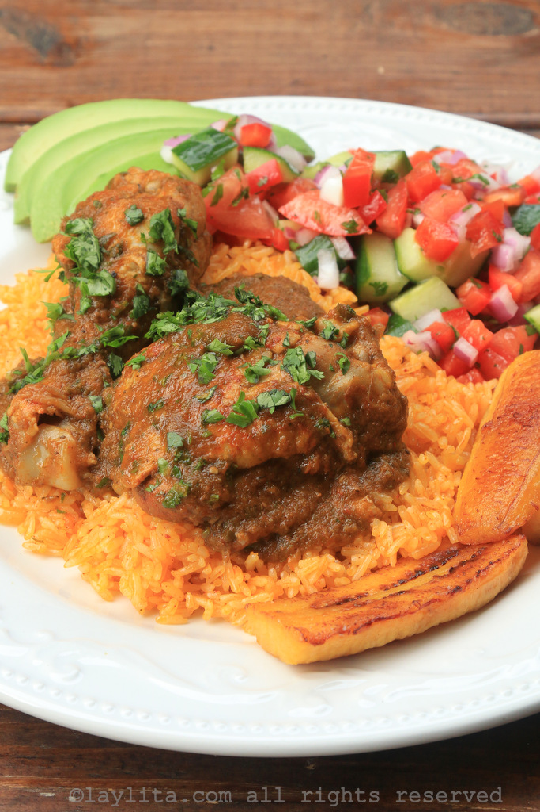

chicken
Seco de pollo: Ecuadorian chicken stew

Description
Seco de pollo is an Ecuadorian chicken stew cooked slowly in a sauce of beer,
naranjilla, onions, garlic, peppers, tomatoes, herbs and spices.
Ingredients
- 4 to 5 lbs of assorted chicken pieces
- 2 tsp ground achiote or annatto can also use paprika
- 1 to 2 cups of beer
- 4- 6 tomatoes
Steps
- Rub the chicken pieces with the ground achiote, cumin, salt and pepper.
- Blend the beer and the naranjilla juice with the onion chunks, whole garlic cloves, tomatoes, bell peppers, hot pepper, cilantro,
parsley, oregano to obtain a smooth sauce or puree.